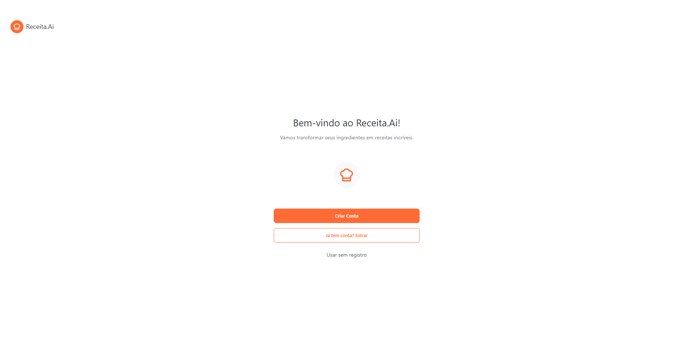
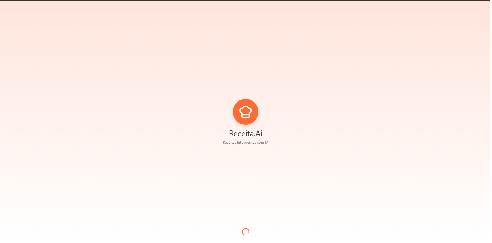
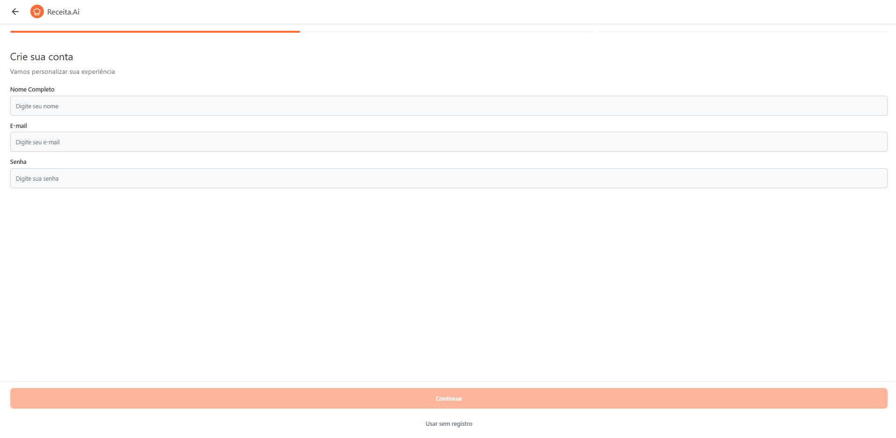
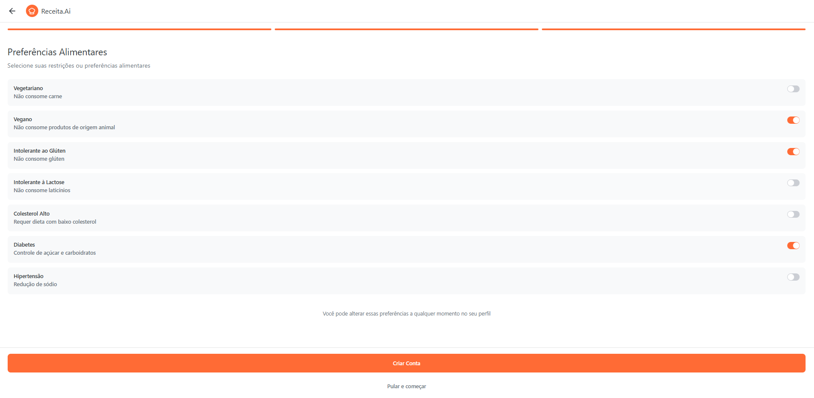
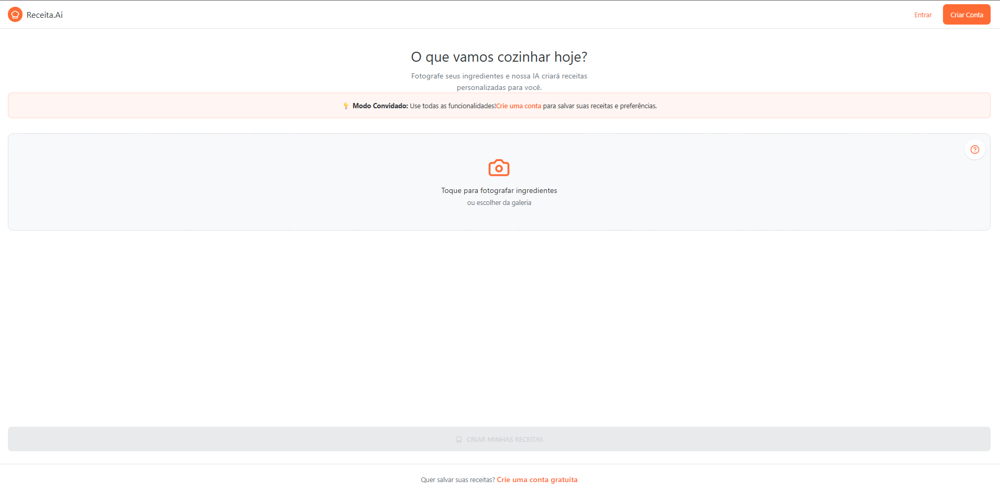
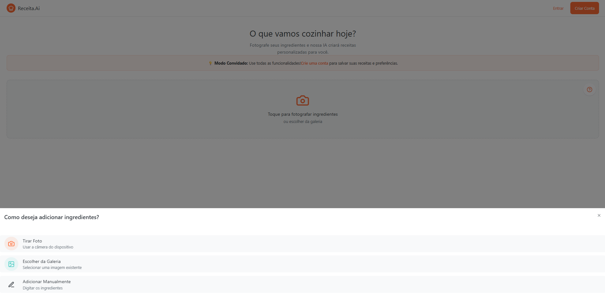
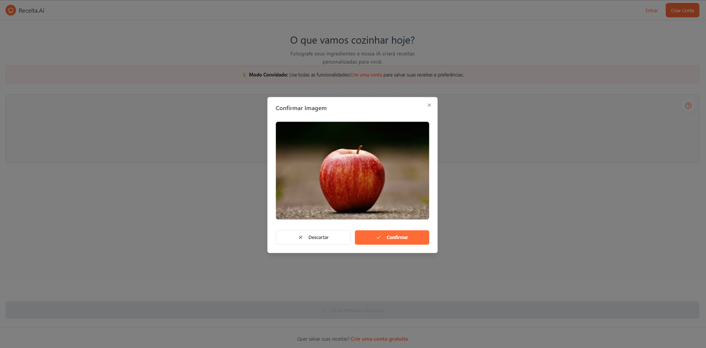
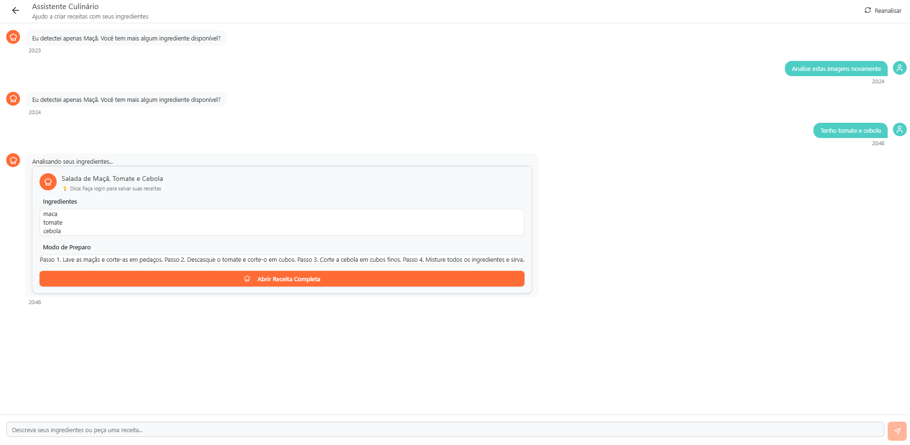

Overview
O Receita.AI é um projeto que foi desenvolvido com o objetivo de reduzir o desperdício de alimentos e facilitar o dia a dia na cozinha. A plataforma oferece uma experiência completa e personalizada para quem busca aproveitar melhor os ingredientes que já possui em casa. Principais funcionalidades:
- Captura de Foto: Permite aos usuários fotografar os alimentos disponíveis na geladeira ou despensa.
- Identificação de alimentos: O sistema reconhece automaticamente os itens presentes na imagem utilizando visão computacional.
- Lista editável de ingredientes: Facilita a correção e ajuste dos alimentos detectados antes de gerar a receita.
- Geração automática de receitas: O sistema cria sugestões inteligentes baseadas nos ingredientes disponíveis.
Além dessas funcionalidades, o Receita.AI conta com o apoio de uma Inteligência Artificial, que atua como uma assistente pessoal de culinária. Com base nos ingredientes detectados, a IA oferece:
- Sugestões de receitas rápidas e práticas;
- Alertas sobre combinações de ingredientes;
- Recomendações de modo de preparo, tempo de cozimento, porções e até um cardápio semanal baseado nos alimentos disponíveis;
- Tudo isso de forma personalizada, conforme os ingredientes que o usuário possui no momento.
O Receita.AI foi pensado para ser uma solução prática, inteligente e acessível, tornando o preparo de refeições mais simples, reduzindo o desperdício e incentivando uma alimentação consciente.
Arquitetura e Tecnologias Utilizadas
O desenvolvimento do Receita.AI foi estruturado em duas principais camadas: back-end e front-end, com foco na experiência do usuário e na precisão do reconhecimento de alimentos.
- Back-end: Desenvolvido seguindo o padrão MVC utilizando Node.js com TypeScript. A autenticação é feita com JWT e cookie-parser, com as senhas protegidas via bcryptjs. O banco de dados utilizado é o MongoDB com Mongoose para modelagem dos dados. Utilizamos também Multer para upload de imagens, CORS para segurança, Express como framework principal e dotenv para variáveis de ambiente. A integração com IA foi feita através de uma API com IA open-source utilizando Axios para as interações e geração de receitas.
- Front-end: Desenvolvido em React Vite com TypeScript, garantindo performance e organização do código. Utilizamos React Navigation para navegação entre telas.
- Captura de imagem: Implementada com biblioteca de câmera, permitindo que o usuário fotografe diretamente os alimentos da geladeira.
- Reconhecimento de alimentos: Utilizamos um modelo de visão computacional para identificar automaticamente os itens presentes na imagem.
- Armazenamento: Dados como receitas favoritas e histórico são salvos localmente utilizando AsyncStorage.
Com essa arquitetura, o Receita.AI oferece uma experiência simples e eficiente: o usuário tira a foto → confirma os ingredientes → recebe uma receita personalizada com base no que já possui em casa.









Tecnologias Utilizadas
- React 18
- TypeScript
- Vite
- Radix UI
- Tailwind CSS
- Axios
- React Hook Form
- Lucide React
- Recharts
- Embla Carousel
- CMDK
- Sonner
- Node.js
- GitHub
- GIT
- Figma